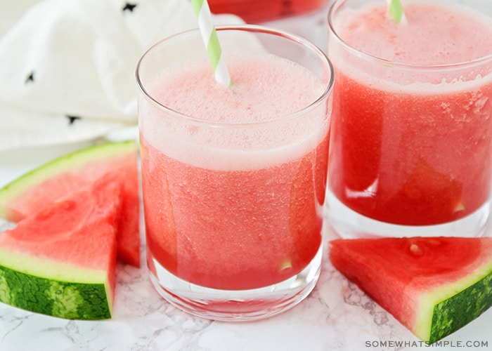

Watermelon Cooler Slushy

Desciption
This refreshing drink will keep you cool in the summer. You get to
enjoy watermelon without having to
stiff throught watermelon seeds.
Ingredients
- 4 cup seedless cube watermelons
- 10 ice cubes
- 1/3 cup fresh lime juice
- 1/4 cup of white suger
- 1/8 tablespoon salt
Steps
- Place watermelon and ice into the blender
- Pour in lime juice, suger and salt in there
- Blend until smooth